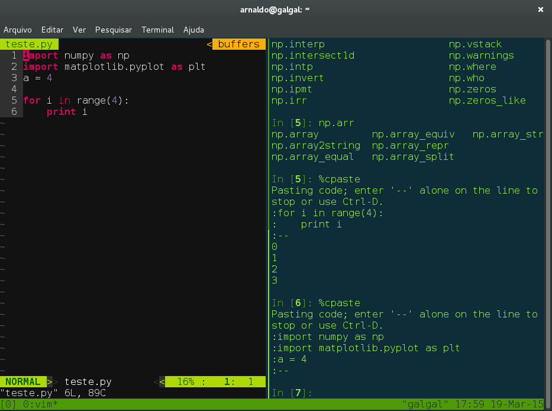

Usando o TMUX com vim e python
19 03 2015
O Tmux é um aplicativo chamado Terminal Multiplexer, que possibilita uma experiência com suas máquinas remotas, de maneira mais agradável. Você pode fazer splits de janelas e ainda utilizar com mais conveniência seus arquivos e executáveis no servidor remoto. Ele é principalmente bom, para evitar perda dos seus trabalhos no servidor quando a rede cai. Assim a sessão do tmux fica rodando no servidor, bastando ao relogar à maquina digitar um tmux attach.
Para instalar, basta um apt-get tmux e seu uso básico é descrito em vários lugares pela web.
Após acessar o seu servidor com ssh, você roda um tmux attach ou tmux new que ele se encarrega de abrir a sessão corrente no seu servidor ou em criar uma nova, caso não consiga fazer o attach.
tmux new
Isso fará com que o tmux seja iniciado. Existem diversos comando utilizados pelo tmux e os únicos dois que utilizei e venho utilizando são:
Ctrl-b % # para criar um split vertical
Ctrl-b o # que alterna entre os "panes" criados
A segunda parte, foi habilitar o plugin vim-slime para interagir com meu vim e poder enviar códigos em partes para um IPython aberto em um dos "panes" criados. Veja como ficou minha janela:

Dessa forma, toda vez que quero mandar uma linha do vim para o IPython (que está no "pane" lateral faço assim dentro do vi
# Normal Mode
Shift + v # seleciona a linha ou o bloco que deseja rodar
Ctrl-c c # Deixando o Ctrl pressionado e apertando "c" duas vezes
O prompt do vim-slime te faz duas perguntas:
tmux socket name: default
Após pressionar enter, ou modificar o nome do socket, caso você tenha aberto o tmux com outro nome ou queira acoplar o vim a um outro socket; e depois:
tmux target pane: :
Onde as combinações são explicitadas aqui:
tmux target pane
":" means current window, current pane (a reasonable default)
":i" means the ith window, current pane
":i.j" means the ith window, jth pane
"h:i.j" means the tmux session where h is the session identifier (either session name or number), the ith window and the jth pane
Nesse caso usamos a combinação 0.1 que quer dizer window 0 e pane 1. ficando assim:
tmux target pane: :0.1
Assim está feito o seu transporte de códigos do VI para o IPython no seu servidor. Deixei no GitHub o arquivo de otimizações que estou usando no tmux. Basta colocar no home do seu usuário no servidor.
blog comments powered by Disqus